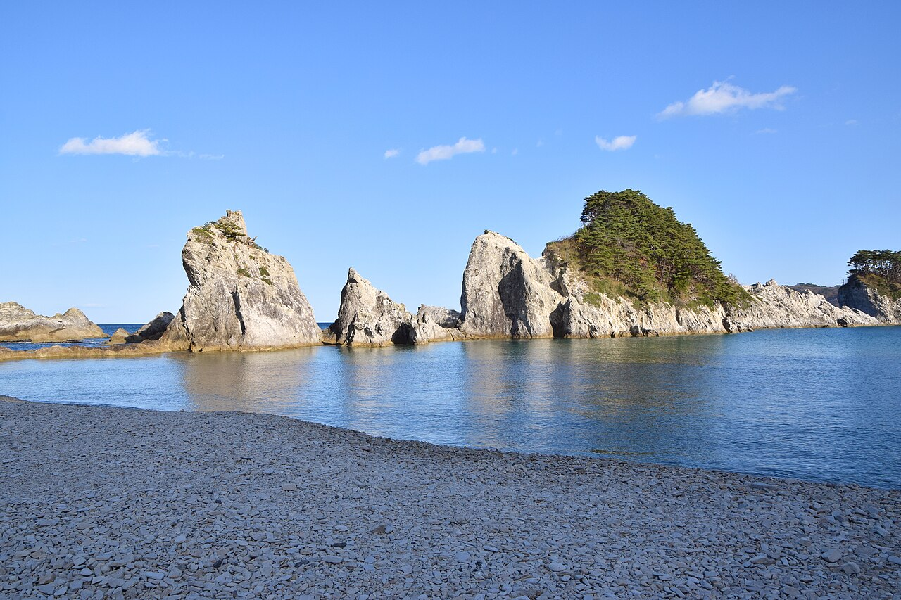
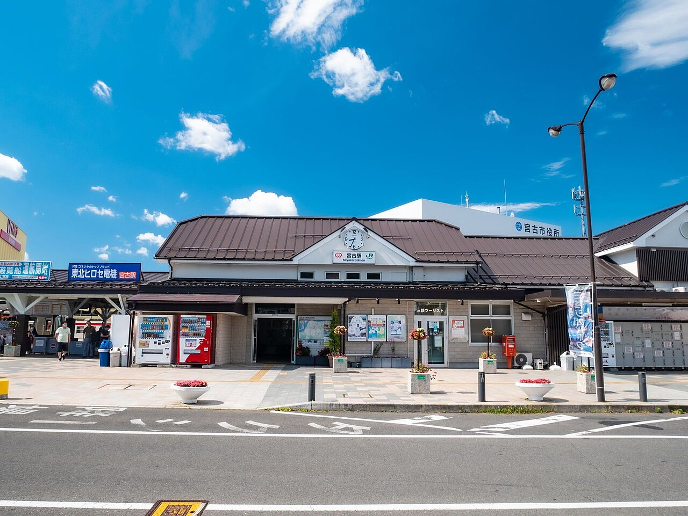
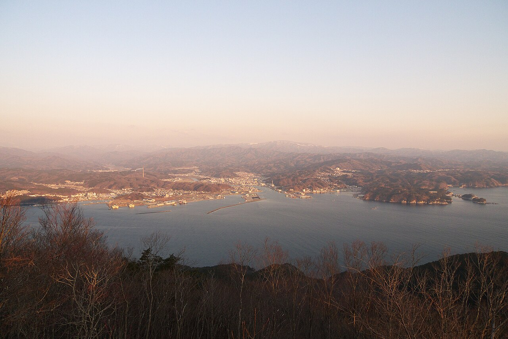

ただいま、の一杯を。
※このコピーはサイト制作側のイメージで、お店の言葉ではありません。
宮古市大通3丁目のカフェ、HOME COMING COFFEE。このサイトでは、お店の場所と連絡先をご案内します。
宮古で撮影撮影地: 宮古市・浄土ヶ浜


宮古で撮影撮影地: 宮古市中心部(月山から望む)

宮古以外・撮影地不明撮影地: 撮影地不明
お店の基本情報
- 店名
- HOME COMING COFFEE
- 所在地
- 岩手県宮古市大通３丁目１−２８ 地図を見る
- 営業時間
- 準備中(お問い合わせください)
- 定休日
- 準備中(お問い合わせください)
お出かけ前に、お電話でご確認ください。
帰り道のイメージ
港町を歩いて一杯に出会う、という流れを制作側が想像して並べました。お店の営業内容や過ごし方を示すものではありません。

宮古で撮影撮影地: 宮古市・宮古港(早朝)
01海を眺めた帰り道。イメージ

宮古で撮影撮影地: 宮古市・宮古駅駅舎
02駅の灯りを背に、大通りへ。イメージ

宮古で撮影撮影地: 宮古市中心部と浄土ヶ浜方面(月山から望む)
03少し足を止めたくなる、通りの一角。イメージ